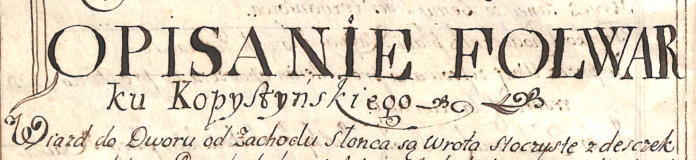

Aktualności 2018
Wydarzenia i informacje
W związku ze zmianami organizacyjnymi, od końca grudnia 2018 r. strona Kopysna będzie niedostępna.
Wszystkim miłośnikom Karpat polecamy bardzo ciekawą stronę dusekarpat.cz na której zamieszczono wiele fotografii i informacji, w tym o naszej miejscowości).
W zakładce Środowisko zaktualizowaliśmy informacje dotyczące drzew pomników przyrody, uzupełniając wykaz o trzy nowe pomniki (zob. edziennik.rzeszow.uw.gov.pl.
Cieszy nas fakt ustanowienia nowych pomników przyrody. Mamy jednak przy tym prośbę do autorów takich inicjatyw, jak i urzędników odpowiedzialnych za treść uchwał, będących aktami prawa miejscowego, by w przyszłości używali w nich urzędowej nazwy naszej miejscowości KOPYSNO, a nie jak błędnie podano w uchwale - Kopystno (Kopystno to nazwa części miasta Gorzów Wielkopolski). Ponadto, ze zdziwieniem przyjęliśmy nadanie nowym pomnikom przyrody takich nazw, jak „Oscar”, „Mark” i „Katie”. Czym kierowano się przypisując drzewom takie imiona? Tego nie wiemy. Czyżby na przestrzeni wieków nie było nikogo, kto byłby związany z Kopysnem lub w nim mieszkał, i którego imię lub nazwisko można by wykorzystać przy nadawaniu nazw pomnikom przyrody? Koniecznie musiano sięgnąć do obco brzmiących słów?
Z przyjemnością informujemy o planowanej realizacji filmu fabularno-dokumentalnego o roboczym tytule "Żandarm z Kopysna", opartego na prawdziwych wydarzeniach. W tle m.in. porwanie, potyczka sądowa, ucieczka przed Sowietami. Więcej szczegółów podamy w późniejszym terminie.
Zapowiadany felieton o Kopysnie nie uzyskał akceptacji władz TVP i nie zostanie wyemitowany.
Na wieży triangulacyjnej na Kopystance umieszczono tabliczkę ku pamięci Darka "Harnasia" Hopa, zmarłego niedawno założyciela Klubu Górskiego PTTK "Karpaty".

W zakładce Informacje/Dzieje wsi/ dodaliśmy opis dworu i folwarku (w tym wykaz mieszkańców wsi i ich obowiązki wynikające z pańszczyzny oraz rodzaje hodowanych zwierząt i uprawianych roślin) z roku 1726, kiedy Kopysno było częścią klucza rybotyckiego.

W zakładce Lokalizacja/Kartografia archiwalna zamieściliśmy mapę Kopysna z lat 1869-1887. Warto zwrócić uwagę, iż w owym czasie niedaleko cerkwi znajdował staw o pow. ok. 10 arów, którego brak na innych mapach historycznych. W zakładce Informacje/Dzieje wsi uzupełniliśmy informacje na temat mieszkańców Kopysna, emigrujących do Argentyny w latach dwudziestych ubiegłego wieku. Chętnych do poszukiwań swoich bliskich w archiwach argentyńskich zapraszamy na stronę cemla.com.
Dzięki zachowanym dokumentom będącym w posiadaniu Archiwum Państwowego w Przemyślu, uzupełniliśmy historię wsi m.in. o informację na temat 8 pól naftowych o nazwie "MILIARD", które istniały w Kopysnie. Wkrótce dodamy opis dworu i innych włości istniejących za czasów Lubomirskich, kiedy Kopysno było częścią klucza rybotyckiego.
Przeglądając cyfrowe archiwa natknęliśmy się na rozprawę Antoniego Prochaski "Konferedacya lwowska 1464 roku" w czasopiśmie "Kwartalnik Historyczny" z 1892 roku. Autor rozprawy, powołując się na "Rękopis bibl. Ossolińskich 1251 p. 88(6)", zawarł w niej informację o dokumencie sporządzonym w czasie rządów namiestnika Rusi Halickiej - księcia Władysława Opolczyka, w którym nałożył on Józefowi (Osip) Biedunowi (Biduń) z Kopysna obowiązek tzw. służby konnej zwanej „pojazdem". W rozprawie nie podano daty sporządzenia dokumentu, lecz kierując się okresem rządów namiestnika można przypuszczać, iż miało to miejsce w latach 1372-1378. Dokument ten potwierdza istnienie wsi o wiele lat wcześniej niż akt nadania sporządzony przez Władysława Jagiełłę z 1408 r., na który powołuje się wielu autorów.